Akvaryum blogu: Ankara atölyemizden rehberler
Mobilyalı akvaryum seçiminden betta ve nano akvaryum kurulumuna, bakım rutinlerinden dekorasyon fikirlerine kadar Ankara Ostim'deki atölyemizde edindiğimiz deneyimleri paylaşıyoruz.

Evde balık beslemek: balık akvaryumu kurmaktan bakıma başlangıç rehberi
Evde balık beslemek için balık akvaryumu seçimi, su olgunlaştırma, akvaryum balıkları, yem, filtre, akvaryum motoru ve ısıtıcı: yeni başlayanlar için adım adım rehber.
Devamını oku →
Akvaryum camı ve akvaryum tankı: cam akvaryum seçerken nelere dikkat edilir?
Akvaryum camı kaç mm olmalı? Cam akvaryum, akvaryum tankı ve akvaryum kasası seçerken cam kalınlığı, silikon işçiliği, ölçü ve taşıyıcı gövde rehberi.
Devamını oku →
Karides akvaryumu: neocaridina ve amano karides için kurulum ve bakım rehberi
Karides akvaryumu nasıl kurulur? Neocaridina (red cherry) ve amano karides için akvaryum boyutu, su değerleri, filtre, bitki, yem ve üreme: adım adım rehber.
Devamını oku →
Teraryum nasıl yapılır? Adım adım kapalı teraryum rehberi
Kapalı teraryum nasıl yapılır? Drenaj katmanı, aktif karbon, toprak, bitki seçimi ve nem dengesiyle evde kendi kendine yaşayan bir teraryum kurun.
Devamını oku →
Teraryum bitkileri ve teraryum bakımı: en kolay türler
Teraryum bitkileri hangileri? Kapalı ve açık teraryum için en uygun bitkiler, teraryum bakımı, sulama, ışık, küf ve buğu sorunlarına çözümler.
Devamını oku →
Dekoratif abajur fikirleri: içinde yaşam olan ahşap abajur
Salon ve yatak odası için dekoratif abajur fikirleri: ahşap abajur, sıcak ışık tonu seçimi ve içinde bitki ya da akvaryum olan yaşayan abajur tasarımı.
Devamını oku →
Gece lambası fikirleri: yatak odası için ışıklı teraryum lamba
Yatak odası ve çocuk odası için dekoratif gece lambası fikirleri: sıcak ışıklı teraryum lamba, ahşap gece lambası ve uykuya uygun ışık tonu seçimi.
Devamını oku →
Işıklı bitki saksısı: sukulent ve kaktüs için cam saksı
Işıklı bitki saksısı ile ışık almayan köşelerde bile sukulent ve kaktüs yetiştirin. Cam saksıda drenaj, toprak, sulama ve LED ışık süresi rehberi.
Devamını oku →
Masaüstü bitki saksısı: ofis ve çalışma masası için bitkiler
Ofis ve çalışma masası için masaüstü bitki saksısı fikirleri: az ışıkta yaşayan ofis bitkileri, ışıklı saksı ile bakım ve kurumsal hediye önerileri.
Devamını oku →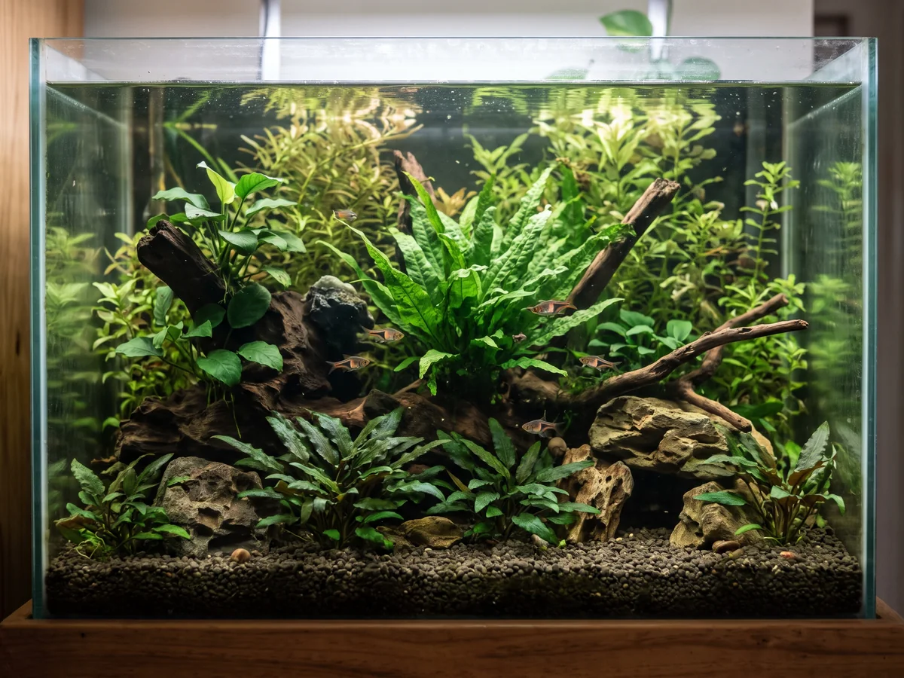
Bitkili akvaryum nasıl kurulur? Akvaryum bitkisi seçimi ve bakım
Bitkili akvaryum kurulumu: zemin, ışık, gübre ve CO₂; yeni başlayanlar için en kolay akvaryum bitkileri ve su bitkileri, yerleşim ve bakım ipuçları.
Devamını oku →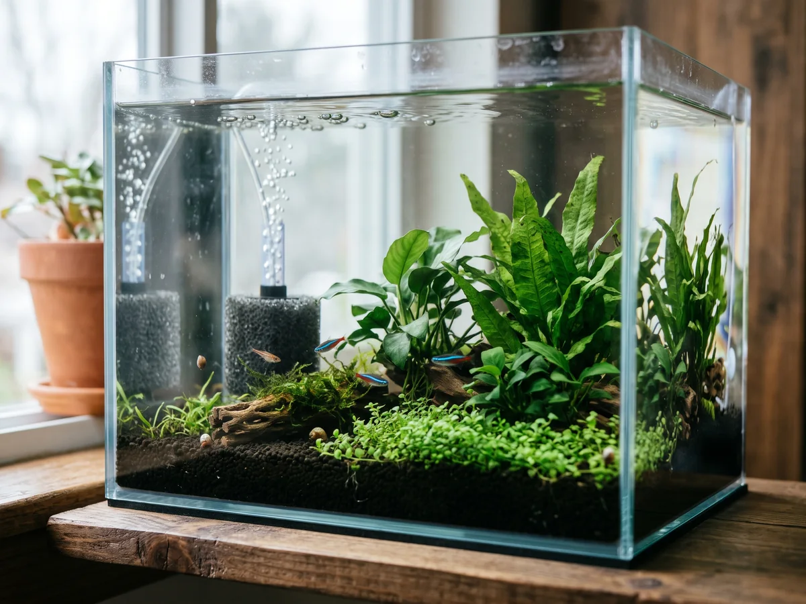
Akvaryum filtresi ve akvaryum pompası nasıl seçilir?
Akvaryum filtresi türleri (sünger, iç, askı, dış filtre), akvaryum pompası ve hava motoru farkı, doğru debi hesabı ve filtre bakımı rehberi.
Devamını oku →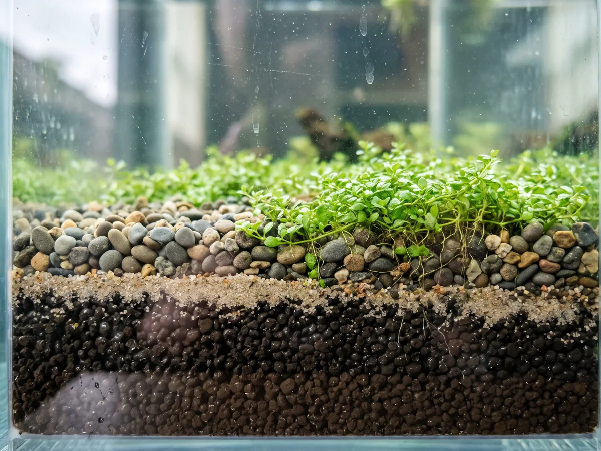
Akvaryum kumu ve zemin seçimi: hangi zemin hangi akvaryuma?
Akvaryum kumu, çakıl ve besinli akvaryum toprağı karşılaştırması: bitkili akvaryum, betta ve karides için doğru zemin, kalınlık ve yıkama ipuçları.
Devamını oku →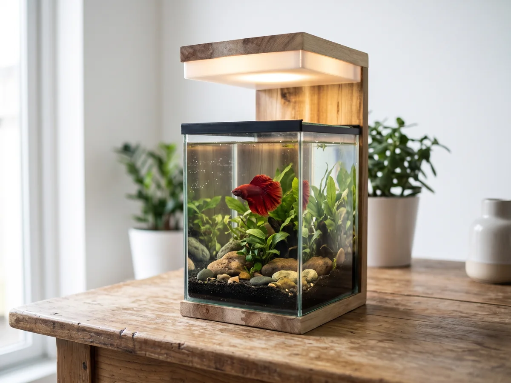
Akvaryum fiyatları 2026: akvaryumun fiyatını neler belirler?
Akvaryum fiyatları 2026: hazır ve el yapımı akvaryum, mobilyalı akvaryum ve kurulum maliyetini belirleyen ölçü, cam, malzeme ve ekipman kalemleri.
Devamını oku →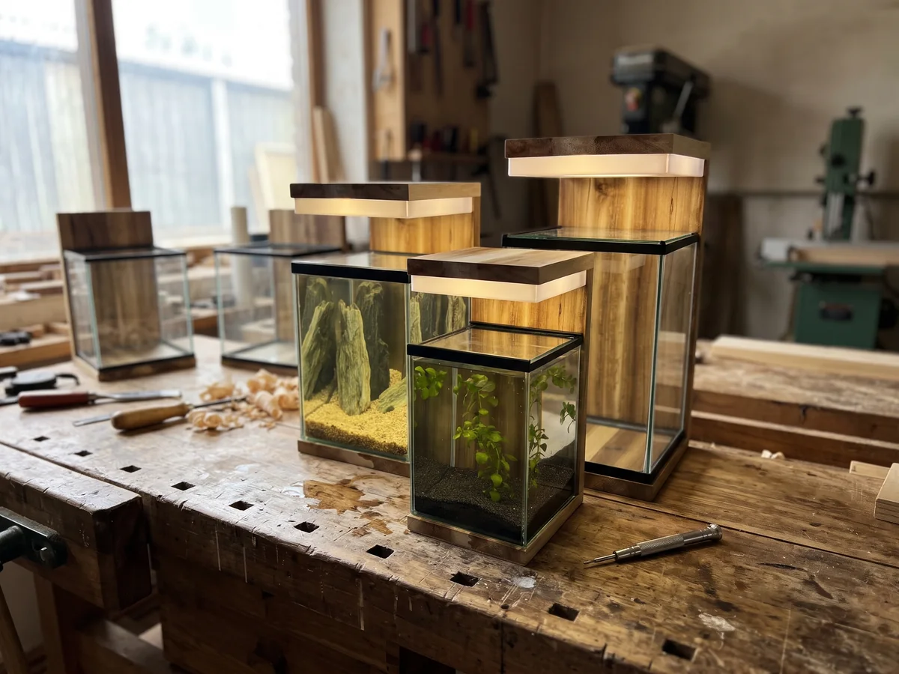
Ankara'da akvaryum alırken bilmeniz gereken her şey
Ankara'da akvaryum mu arıyorsunuz? Ölçü, cam, aydınlatma, mobilyalı akvaryum ve kurulum seçeneklerini karşılaştırın; Ostim atölyemizden ipuçları.
Devamını oku →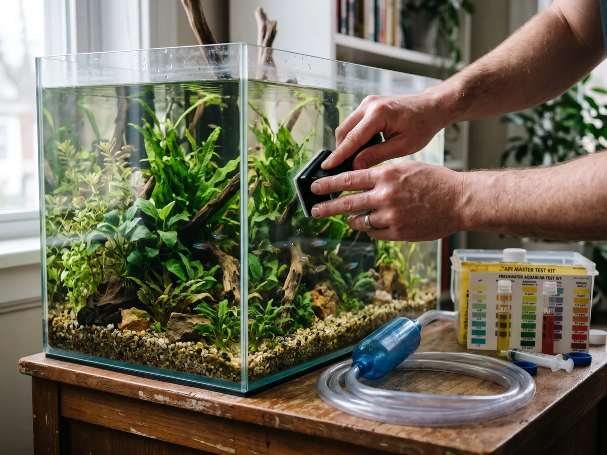
Ankara'da akvaryum bakım hizmeti: neler yapılır, ne sıklıkla?
Ankara'da akvaryum bakım hizmeti alırken nelere dikkat etmeli? Su değişimi, filtre ve cam temizliği, bitki budama ve su testi: bakımın kapsamı ve sıklığı.
Devamını oku →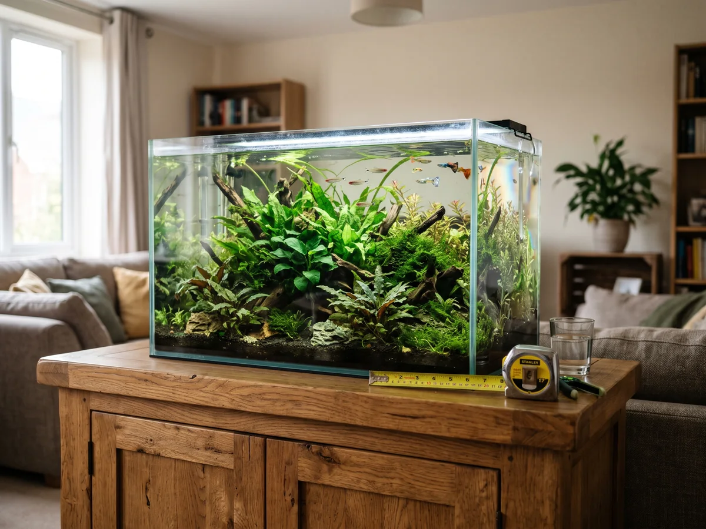
Akvaryum sehpası ölçüleri: doğru sehpa nasıl seçilir?
Akvaryum sehpası ölçüleri nasıl belirlenir? Akvaryum ağırlığı, sehpa yüksekliği, taşıma kapasitesi ve malzeme seçimi için pratik rehber.
Devamını oku →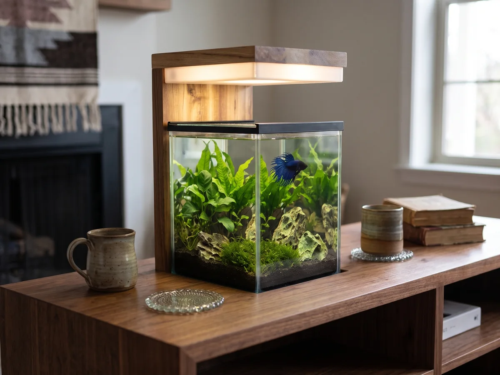
Mobilyalı akvaryum nedir? Evinize uygun modeli seçme rehberi
Mobilyalı akvaryum; akvaryum ile dolap, sehpa ya da konsolu tek parça birleştirir. Çeşitleri, avantajları, ölçü ve malzeme seçimi bu rehberde.
Devamını oku →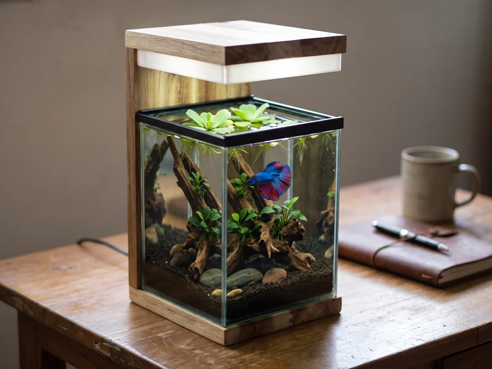
Betta akvaryumu nasıl kurulur? Adım adım rehber
Betta (beta) balığı için akvaryum kurulumu: hacim, sıcaklık, filtre, bitki seçimi ve su döngüsü. Yeni başlayanlar için adım adım beta akvaryumu rehberi.
Devamını oku →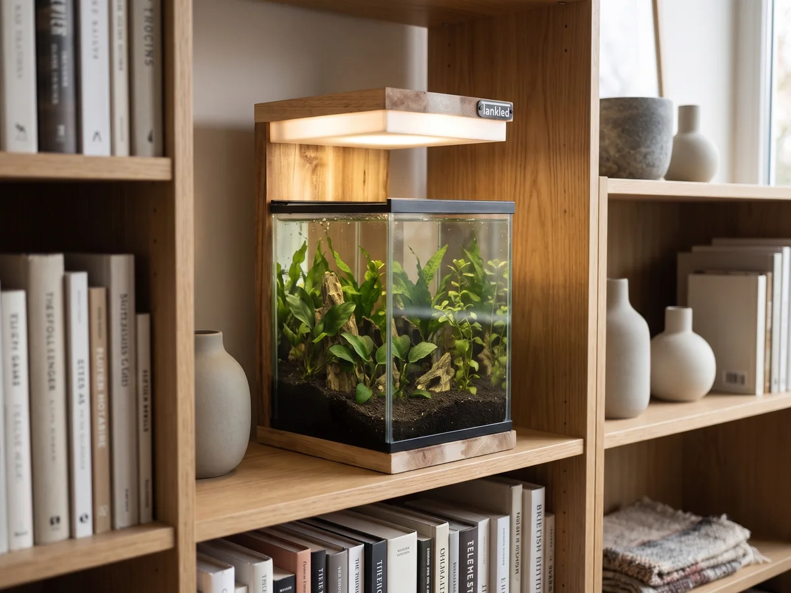
Ahşap akvaryum fikirleri: tahta akvaryumu dekorasyonun parçası yapın
Ahşap (tahta) akvaryum, akvaryum dolabı ve dekoratif akvaryum fikirleri: salon, çalışma odası ve yatak odası için ilham veren yerleşim önerileri.
Devamını oku →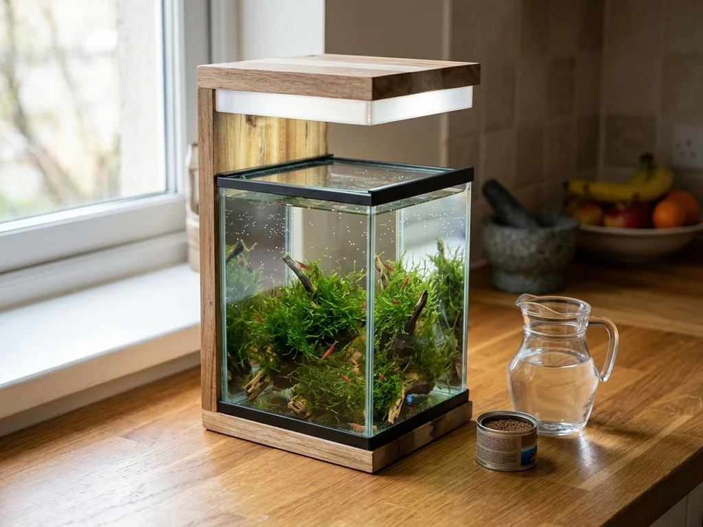
Nano akvaryum bakımı: 15 dakikalık haftalık rutin
Nano akvaryum bakımı nasıl yapılır? Su değişimi, filtre temizliği, bitki budama ve yosun kontrolü için kolay haftalık ve aylık bakım rutini.
Devamını oku →